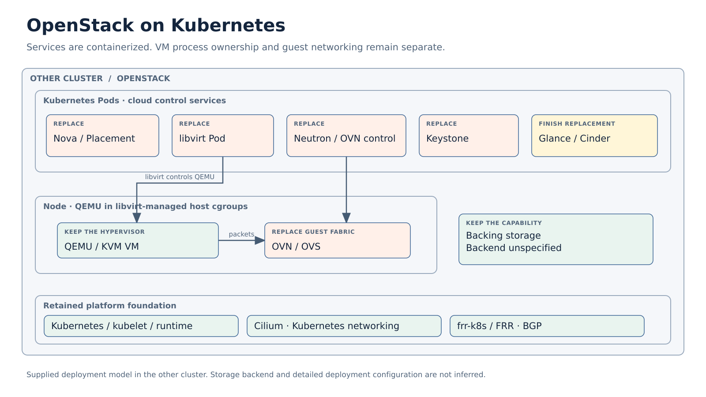

One Kubernetes control plane
VMs with one Kubernetes control plane
OpenStack comparison / qrab target architecture
Evidence: S01, U01, U021 / 10 · leadership

OpenStack: simple boundary overview

qrab: simple target boundary overview
One Kubernetes control plane
Keep the platform already doing the work
Kubernetes
API · admission · scheduling · kubelet · container lifecycle
Cilium + FRR
Endpoint identity · policy · datapath · BGP reachability
QEMU + infrastructure
QEMU/KVM · Linux · backing storage · existing identity provider
Evidence: S02, S08, S14, S214 / 10 · leadership
One Kubernetes control plane
Remove services; assign the surviving work
| Replace | Responsibility moves to |
|---|---|
| Nova / libvirt | Kubernetes + operator + manager |
| Neutron / OVN | Cilium + anchors + netd + FRR |
| Keystone | API auth/RBAC + OIDC roles + SPIRE |
| Glance / Cinder | Image/disk controllers + storage service |
Evidence: S02, S08, S13, S15, U01, U02, U03, U045 / 10 · leadership

Containerized libvirt versus a container-owned VM
One Kubernetes control plane
Three questions; three policy owners
| Question | Owner |
|---|---|
| Who is the human? | Existing OIDC provider |
| May this actor do this? | Kubernetes RBAC/admission or VM app roles |
| Which service is calling? | SPIFFE/SPIRE + exact peer policy |
Evidence: S18, S19, S20, S237 / 10 · leadership
One Kubernetes control plane
Images and volumes: useful foundation, explicit remaining scope
Already implemented
Verified imports · sealed generations · CoW clones · online growth · fencing
Finish the required subset
Publication/sharing · distribution · backup/restore · quotas · recovery drills
Keep the authority split
Storage owns bytes/fences. Operator orchestrates. QEMU performs block I/O.
Evidence: S13, S14, S15, U03, U048 / 10 · leadership
One Kubernetes control plane
The review found real boundary bugs
- Cleanup used labels/access lists as lifecycle ownership.
- A verified qcow2 file could select unverified backing/data inputs.
- Local Pod authority needed exact cgroup and held process/resource references.
Evidence: A01, A02, A04, A05, A069 / 10 · leadership
One Kubernetes control plane
Retire a service when its last responsibility moves
- Prove the workload: boot, network, identity, disks, backup and recovery.
- Cut over one writer and one network authority.
- Keep a data-aware rollback plan; then retire unused cloud services.
Evidence: S02, S08, S13, S1510 / 10 · leadership